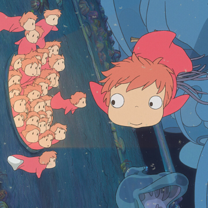
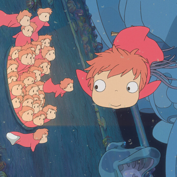

2008 | 101 min | fantasia
Ponyo – Uma Amizade que Veio do Mar é um filme de animação japonês dirigido por Hayao Miyazaki e produzido pelo Studio Ghibli. A data de estreia no Japão foi 19 de julho de 2008. O filme teve sua estreia no Brasil em 2 de julho de 2010. Ponyo é uma peixinha dourada que conhece o garoto Sosuke. Ele a leva para a sua casa e decide cuidar dela. O amor e a amizade deles são tão grandes, que Ponyo resolve se tornar humana só para ficar mais tempo ao lado de Sosuke.
Certa manhã, quando brinca na praia, o pequeno Sosuke encontra um peixe vermelho preso num frasco de doce. Sosuke liberta o peixinho do frasco, a quem dá o nome de Ponyo, e promete protegê-lo para sempre. Mas o pai de Ponyo, um feiticeiro que vive no fundo do mar, força o pequeno peixe a regressar às profundezas. Decidida a tornar-se humana, Ponyo foge para reencontrar Sosuke e espalha acidentalmente uma poção mágica pelo oceano, transformando as suas irmãs em ondas gigantes que ameaçam inundar a aldeia de Sosuke. O amor e a responsabilidade, o oceano e a vida, num mundo fantástico onde a magia também faz parte das coisas naturais do dia-a-dia.
O filme teve sua estreia nos cinemas brasileiros em 2 de julho de 2010. Saiu em DVD e BluRay pela PlayArte com dublagem e legendas em português. Atualmente está disponível junto a mais outros 20 filmes do Studio Ghibli na plataforma de streaming da Netflix.
 
